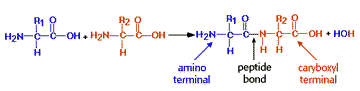

Using Computers to Study Molecular Structure
Peptide Bonds
About peptide bonds
Proteins are formed from amino acids linked together in end-to-end fashion. The carboxyl group of one amino acid condenses with the alpha amino group of the next via the peptide bond.
Choose a few peptides from the list below for viewing. For each peptide, identify, for yourself, the individual amino acids, the peptide bond, and the two ends of the molecule. These are known as the "amino terminal" and the "carboxyl terminal" ends. HINT: Try viewing the molecules in wire-frame mode.
Opening peptide files in MacMolecule
When you choose a peptide from the list below, MacMolecule will automatically open that peptide file. You can switch back to Netscape by choosing Netscape from the Applications Menu.Peptide MacMolecule Files
Questions
3. TRUE or FALSE: When a peptide bond is formed, the two alpha carbons of the linked amino acids, along with the C, O and N atoms of the actual peptide bond, all lie in the same plane.4. TRUE or FALSE: The R-groups of different amino acids in a peptide are linked directly to each other by covalent bonds.


University of Arizona
Wednesday, September 9, 1998
Contact the Development Team
http://biology.arizona.edu
All contents copyright © 1998. All rights reserved.